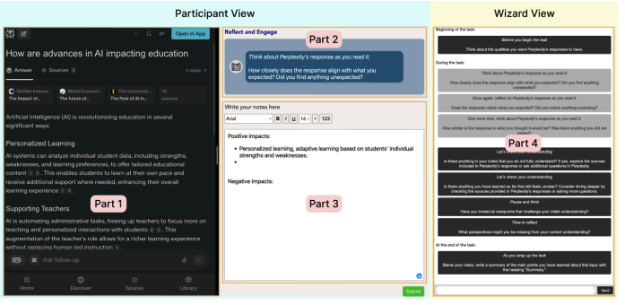
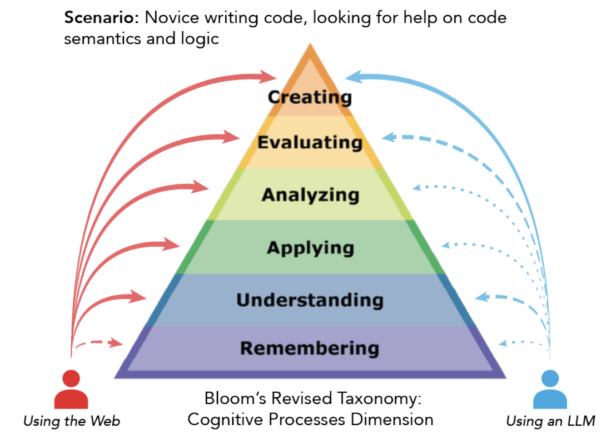
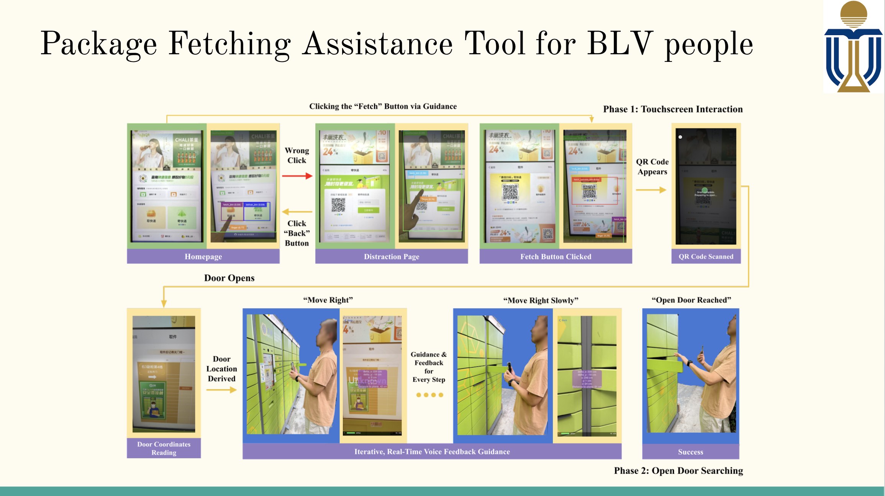

Zhitong Klara Guan
School of Information, UT Austin
Austin, TX 78701
I am a PhD Candidate in Information Studies at the University of Texas at Austin, advised by Prof. Soo Young Rieh. Previously, I was a Research Associate at the APEX Group at HKUST working on accessibility technology research with Prof. Mingming Fan, and a Product Manager at Tencent's WeChat Group. I hold an M.S. in Industrial Engineering and Operations Research and a B.A. in Mathematics and Data Science (Double Major), both from UC Berkeley.
My research lies at the intersection of Human-Computer Interaction and Interactive Information Retrieval, with a focus on designing and evaluating Generative AI search systems that augment rather than replace human cognition. I am particularly interested in how AI-mediated search can support higher-order cognitive processes: sensemaking, critical thinking, decision-making, and creativity, and how interface design shapes the way people think and engage with information.
| Apr 2026 |
Upcoming travel to ACM CHI 2026 in Barcelona, Spain to:
|
| Mar 2026 | Excited to attend my first CHIIR conference! Presenting at the Doctoral Consortium and the Workshop on Generative AI & Academic Search. See you in Seattle. |
| Jan 2026 | I passed my qualifying procedure, including a qualifying paper, written exam, and oral exam. Special thanks to my committee: Prof. Soo Young Rieh, Prof. Andrew Dillon, and Prof. Jacek Gwizdka for their guidance and support. |
| Oct 2025 | Our work Enhancing Critical Thinking in Generative AI Search with Metacognitive Prompts was accepted at ASIS&T 2025. See you in Crystal City, Virginia. |



Email: klarazt@utexas.edu
LinkedIn: klara_guan